In the first chapter we saw, as an introduction to the system, some simple
examples of Sketchpad drawings. In the body of this report we have seen
many drawings, all of which, except the drawing of the light pen, Figure 4.2,
were drawn with Sketchpad especially to be included here. In this chapter
we shall consider a wider variety of examples in somewhat more detail. The
examples in this chapter were all taken from the library tape and thus serve
to illustrate not only how the Sketchpad system can be used, but also how it
actually has been used so far.
第1章では、このシステムの導入として、Sketchpadによる描画の簡単な例をいくつか紹介しました。本報告書の本文中で取り上げた数多くの図のうち、図4.2のライトペンの図を除けば、それらはすべて、本報告書に掲載するためにSketchpadを用いて特別に作成されたものです。本章では、より多岐にわたる例を、いくぶん詳細に検討します。ここで取り上げる例はすべてライブラリ・テープから引用されたものであり、したがって、Sketchpadシステムがどのように利用可能かという点だけでなく、実際にこれまでどのように利用されてきたかという点を示すものでもあります。
We conclude from these examples that Sketchpad drawings can bring invaluable understanding to a user. For drawings where motion of the drawing,
or analysis of a drawn problem is of value to the user, Sketchpad excells. For
highly repetitive drawings or drawings where accuracy is required, Sketchpad is sufficiently faster than conventional techniques to be worthwhile. For
drawings which merely communicate with shops, it is probably better to use
conventional paper and pencil.
これらの例から、Sketchpadによる図面はユーザーに極めて有益な理解をもたらすと言えます。図形の動きや、描かれた問題の分析がユーザーにとって価値を持つ場合、Sketchpadは特に優れた能力を発揮します。高度に反復的な図面や精度が求められる図面においても、Sketchpadは従来の手法に比べて十分に高速であり、利用する価値があります。一方、単に製作現場へ情報を伝達するための図面であれば、従来通り紙と鉛筆を使う方が適しているでしょう。
The instance facility outlined in Chapter I enables one to draw any symbol
and duplicate its appearance anywhere on an object drawing at the push of
a button. The symbols drawn can include other symbols and so on to any
desired depth. This makes it possible to generate huge numbers of identical
shapes; if at each stage two of the previous symbols are combined to double
the number of basic shapes present, in twenty steps one million objects are
produced.
第1章で概説したインスタンス機能を使えば、任意のシンボルを描画し、ボタンを一つ押すだけで、そのシンボルと同じものをオブジェクト上の任意の場所に複製して配置することができます。描画するシンボルには他のシンボルを含めることができ、この入れ子構造は任意の階層の深さまで繰り返すことが可能です。これにより、膨大な数の同一形状を生成することができます。例えば、各段階で直前のシンボルを2つ組み合わせて基本形状の数を倍にしていけば、20段階の処理で100万個ものオブジェクトを作り出すことができます。
The hexagonal pattern we saw in Figure 1.1, p.10, is one example of a
highly repetitive drawing. The hexagonal pattern was first drawn in response
to a request for hexagonal “graph” paper. About 900 hexagons were plotted
on a single 30 × 30 inch plotter page. It took about one half hour to generate
the 900 hexagons, including the time taken to figure out how to do it. Plotting
them takes about 25 minutes. The drafting department estimated it would take them two days to produce a similar pattern.
10ページの図1.1に見られる六角形のパターンは、高度に反復的な図面の一例です。この六角形パターンは、当初、六角形の「方眼紙」を作成してほしいという要望に応えて描かれたものでした。30×30インチのプロッター用紙1枚に、約900個の六角形が描画されました。その作成方法を検討する時間を含め、これら900個の六角形を生成するのに要した時間は約30分でした。実際の描画（プロット）にかかる時間は約25分です。製図部門は、同様のパターンを作成するには2日を要すると見積もっていました。
The instance facility also made it easy to produce long lengths of the zigzag pattern shown in Figure 9.1. As the figure shows, a single “zig” was duplicated in multiples of five and three, etc. Five hundred zigs were generated
in a single row. Four such rows were plotted one half inch apart to be used for
producing a printed circuit delay line. Total time taken was about 45 minutes
for constructing the figure and about 15 minutes to plot it.
インスタンス機能を利用することで、図9.1に示すようなジグザグ模様を長い区間にわたって容易に作成することもできました。図に見られるように、単一の「ジグ（屈曲部）」が5個や3個といった単位で複製され、1列に500個のジグが生成されました。プリント基板用遅延線を製作するために、こうした列を0.5インチの間隔で4本配置しました。所要時間は、図の作成に約45分、プロット（描画）に約15分でした。
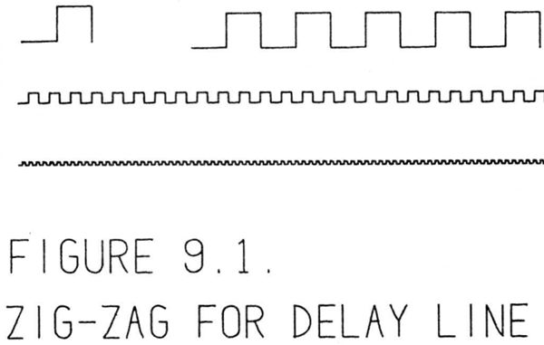
In both the zig-zag pattern of Figure 9.1 and in the hexagonal pattern of Figure 1.1 the various subpictures were fastened together by attachment points.
In the hexagonal pattern, each corner of the basic hexagon was attached to
the corners of adjacent hexagons. The position of any hexagon was then completely determined by the position of any other. In the zig-zag pattern of Figure 9.1, however, only a single attachment was made between adjacent zigzags. Additional constraints were applied to each instance to keep them erect
and of the same size.
図9.1のジグザグ・パターンにおいても、図1.1の六角形パターンにおいても、個々の部分図形は結合点によって互いに固定されていました。
六角形パターンでは、基本となる六角形の各頂点が、隣接する六角形の頂点に結合されていました。そのため、ある六角形の位置が決まれば、他のすべての六角形の位置も完全に定まるようになっていました。一方、図9.1のジグザグ・パターンでは、隣接するジグザグ同士の結合は一箇所のみでした。そのため、各要素を直立した状態に保ち、かつ同じサイズに維持するために、個々の要素に対して追加の制約が課されていました。
A somewhat less repetitive pattern to be used for encoding the time in a
digital clock is shown in figure 9.2. Each cross in the figure marks the position of a hole. The holes will be placed so that a binary coded decimal (BCD)
number will indicate the time.
デジタル時計で時刻を符号化するために用いられる、比較的繰り返しの少ないパターンを図9.2に示します。図中の各十字印は、穴の位置を表しています。これらの穴は、時刻がBCD（2進化10進）数で示されるように配置されます。
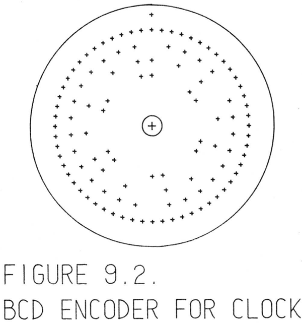
Sketchpad was first used in the BCD clock project to produce 60 radial
lines at equal 6◦
spacing. To do this a single 6◦ wedge was produced by first
trisecting a right angle to obtain a 30◦ wedge and then cutting the 30◦ wedge
into five parts. The relaxation procedure was used in each case to make three
or five sketched-in chords equal in length. Making the 6◦ wedge took a brand
new user less than one half hour including instruction time. The author has constructed other wedges as small as 1/128 of a circle in five minutes. All such
wedges become a part of the library.
Sketchpadは、BCD時計のプロジェクトにおいて、6度間隔で放射状に60本の線を引くために初めて使用されました。これを行う際、まず直角を3等分して30度の扇形を作り、次にその30度の扇形を5等分することで、6度の扇形を作成しました。いずれの工程でも、スケッチした3本または5本の弦の長さを揃えるために、緩和法（relaxation procedure）が用いられました。全くの初心者が説明の時間を含めて6度の扇形を作成するのに要した時間は、30分未満でした。筆者は、円の1/128という小さな扇形を5分で作成したこともあります。このようにして作成された扇形はすべて、ライブラリの一部となります。
The 6
◦ wedge has three attachment points. By attaching five of the wedges
together, and then attaching three groups of five, a quadrant is constructed.
Fitting together four quadrants gives a complete circle based entirely on the
single 6
◦ wedge. The advantage of constructing a full circle composed of 60
wedges is that any lines drawn in the original 6
◦ wedge will appear 60 times
around the circle with no further effort on the part of the user. Sixty radial
lines were produced in this way.
その6度のウェッジには、3つの取り付け箇所があります。このウェッジを5つ連結し、さらにその5つ組を3セット組み合わせることで、円の4分の1（象限）が構成されます。これら4つの象限を組み合わせれば、単一の6度ウェッジを基本単位とした完全な円が出来上がります。計60個のウェッジで円を構成する利点は、元の6度ウェッジに描かれた線が、ユーザーが追加の作業を行うことなく、円全体にわたって60回繰り返して現れることです。こうして、60本の放射状の線が作り出されました。
Using the sixty radial lines plotted for him the BCD clock designer then
marked with pencil approximately where the crosses should be placed to obtain BCD coding. Returning to Sketchpad we put a pattern of dots in the 6
◦
wedge so that in the full circle, rings of dots appeared which could be aimed
at with the light pen. It was then an easy matter to place a cross exactly on
each of the desired dots. Total time for placing crosses was 20 minutes, most
of which was spent trying to interpret the sketch.
BCD時計の設計者は、あらかじめ描画しておいた60本の放射状の線を利用し、BCD符号化を実現するために「×」印を配置すべき位置をおおよそ鉛筆で書き込みました。続いて「スケッチパッド（Sketchpad）」上で、6度ごとの扇形領域にドットのパターンを配置しました。これにより、円全体にわたってドットの環が形成され、ライトペンでそれらを狙えるようになりました。こうなれば、目的の各ドットの上に正確に「×」印を配置することは容易でした。「×」印の配置にかかった時間は合計20分でしたが、その大半はスケッチの内容を読み解くことに費やされました。
By far the most interesting application of Sketchpad so far has been drawing
and moving linkages. We saw in Chapter I the straight line linkage of Peaucellier, Figure 1.6, p.20. The ability to draw and then move linkages opens up
a new field of graphical manipulation that has never before been available. It
is remarkable how even a simple linkage can generate complex motions. For
example, the linkage of Figure 9.3 has only three moving parts. In this linkage
a central ⊥ link is suspended between two links of different lengths. As the
shorter link rotates, the longer one oscillates as can be seen in the multiple exposure. The ⊥ link is not shown in Figure 9.3 so that the motion of four points
on the upright part of the ⊥ may be seen. These are the four curves at the top
of the figure.
これまでのところ、Sketchpadの最も興味深い応用例は、リンク機構を描画し、それを動かすことである。第1章では、ポースリエ（Peaucellier）の直線運動リンク機構（図1.6、20ページ）について取り上げた。リンク機構を描画し、さらにそれを動かせるという機能は、これまでになかったグラフィカルな操作という新しい領域を切り開くものである。単純なリンク機構であっても複雑な動きを生み出せるという点は、実に驚くべきことである。例えば、図9.3に示すリンク機構は、可動部がわずか3つしかない。この機構では、長さの異なる2つのリンクの間に、中央の「⊥（逆T字）」型のリンクが吊り下げられている。短い方のリンクが回転すると、長い方のリンクは揺動運動を行う（多重露光写真で確認できる通りである）。図9.3では、⊥字型リンクの垂直部分にある4点の動きが見えるように、そのリンク自体は描画されていない。図の上部に示されている4本の曲線が、それら4点の軌跡である。
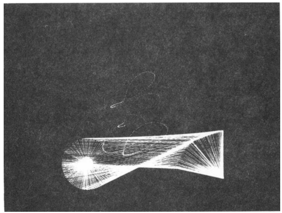
Figure 9.3: The paths of four points on the central link are traced. This is a
15 second time exposure of a moving Sketchpad drawing.
図9.3：中央のリンク上の4点の軌跡が描かれている。これは、動いているSketchpadの図を15秒間長時間露光で撮影したものである。
To make the three bar linkage, an instance shaped like the ⊥ was drawn
and given 6 attachers, two at its joints with the other links and four at the
places whose paths were to be observed. Connecting the ⊥ shaped subpicture
onto a linkage composed of three lines with fixed length created the picture
shown. The driving link was rotated by turning a knob below the scope. Total
time to construct the linkage was five minutes, but over an hour was spent
playing with it.
3節リンク機構を作成するために、まず「⊥」字型の形状を描画し、6つの接続点を設けました。そのうち2つは他のリンクとの連結用、残りの4つは軌跡を観察するための点です。この「⊥」字型の図形要素を、長さの固定された3本の線分からなるリンク機構に接続することで、図のような構成ができあがりました。スコープの下にあるノブを回すことで、駆動リンクを回転させることができました。機構の組み立てにかかった時間は5分でしたが、実際に動かして遊ぶことには1時間以上を費やしました。
Sketchpad can make linkages that one would hardly think of constructing
out of actual links and pins. For example, a Sketchpad sliding joint is ideal,
whereas to actually build a sliding joint is relatively difficult. Again, it is possible to make two widely separated links be of equal length by applying an
appropriate constraint, but to build such a linkage would be impossible.
Sketchpadを使えば、実際のリンクやピンを用いて構成しようとはまず考えつかないようなリンク機構を作成できます。例えば、Sketchpadの「スライドジョイント」は理想的なものですが、実際にスライドジョイントを製作するのは比較的困難です。また、適切な拘束条件を適用することで、大きく離れた位置にある2つのリンクを等長にすることも可能ですが、そのようなリンク機構を実際に製作することは不可能です。
A linkage that would be difficult to build physically is shown in Figure 9.4. This linkage is based on the complete quadrilateral. The three circled
points and the two lines which extend out of the top of the picture to the right
and left are fixed. Two moving lines are drawn from the lower circled points to the intersections of the long fixed lines with the driving lever. The intersection
of these two moving lines (one must be extended) has a box around it. It can
be shown theoretically that this linkage produces a conic section which passes
through the place labeled “point on curve” and is tangent to the two lines
marked “tangent.” Figure 9.4B shows a time exposure of the moving point in
many positions. The straight dotted lines are the paths of other, less interesting points. At first, this linkage was drawn and working in fifteen minutes.
Since then we have rebuilt it time and again until now we can produce it from
scratch in about three minutes.
物理的に製作するのが困難と思われるリンク機構を図9.4に示します。この機構は完全四辺形（complete quadrilateral）に基づいています。図中で丸印が付けられた3つの点と、図の上部から左右に伸びる2本の直線は固定されています。下側の丸印の点からは、長い固定直線と駆動レバーとの交点に向かって、2本の可動直線が引かれています。これら2本の可動直線（一方の直線は延長する必要があります）の交点は、枠で囲んで示されています。この機構によって、「point on curve（曲線上の点）」と記された点を通ると同時に、「tangent（接線）」と記された2本の直線に接するような円錐曲線が描かれることは、理論的に証明可能です。図9.4Bは、可動点が様々な位置にある状態を長時間露光で撮影したものです。点線の直線は、それほど重要ではない他の点が描く軌跡を示しています。当初、この機構の作図と動作確認には15分を要しました。その後、幾度となく改良を重ねた結果、現在ではゼロから約3分で製作できるようになっています。
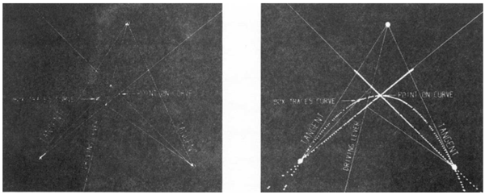
Figure 9.4: As the “driving lever” is moved, the point shown with a box
around it traces a conic section. This conic can be seen in the time exposure.
図9.4：「駆動レバー」を動かすと、枠で囲まれた点が円錐曲線をたどります。この円錐曲線は、長時間露光の画像で確認できます。
It is important that a Sketchpad drawing be made in the correct size for many
applications. For example, the BCD clock pattern shown in Figure 9.2 was
plotted exactly 12 inches in diameter for the actual application. In fact, the
precision of the plotter is such that its plotted output can be used directly as
a layout in many cases. But the size of a drawing as seen on the computer
display is variable. To make it possible to have an absolute scale in drawings,
a constraint is provided which forces the value displayed by a set of digits
to indicate the distance between two points on the drawing. The distance is
indicated in thousandths of an inch for “full size” plotted output.
多くの用途において、Sketchpadで作成する図面を適切なサイズにすることは重要です。例えば、図9.2に示すBCDクロックのパターンは、実際の用途に合わせて直径が正確に12インチになるようにプロットされました。実際、プロッターの精度は非常に高く、その出力結果をそのままレイアウトとして使用できる場合も少なくありません。しかし、コンピュータの画面上で表示される図面のサイズは可変です。図面に絶対的な尺度を持たせるため、数値表示によって図面上の2点間の距離を示すように強制する制約機能が設けられています。この距離は、「実寸大（フルサイズ）」でプロット出力した場合の値を基準として、1/1000インチ単位で表示されます。
This distance indicating constraint is used to make the number in a dimension line. Many other constraints are used to make the arrowheads at the
end of the line be “parallel” to the dimension line and to make enough space
in the line for the dimension number. In some sense the dimension line is a
complicated linkage; like a linkage it can be moved around while retaining its
properties. For example, the arrowheads stay the same size even when the dimension line is made longer. A dimension line with small arrowheads is a part
of the library. This line is suitable for dimensions of the order of a few inches.
A three-four-five triangle dimensioned with this line is shown in Figure 9.5.
この距離指定拘束は、寸法線上の数値を生成するために使用されます。他にも多くの拘束が用いられており、それらは、線の両端にある矢印を寸法線に対して「平行」に保ったり、寸法数値を配置するための十分なスペースを線上に確保したりする役割を果たします。ある意味で、寸法線は複雑なリンク機構のようなものと言えます。リンク機構と同様に、寸法線もその特性を維持したまま移動させることが可能です。例えば、寸法線を長くしても、矢印のサイズは変わりません。小さな矢印を持つ寸法線がライブラリの一部として用意されており、この線は数インチ程度の寸法に適しています。この寸法線を使用して寸法を記入した3-4-5の三角形を、図9.5に示します。
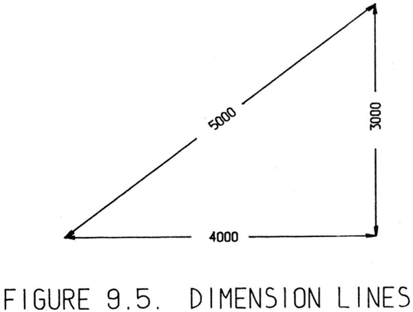
To produce the three-four-five triangle of Figure 9.5, three vertical and four
horizontal line segments were made to be the same length. After erasing these
lines, the three correctly positioned corners of the triangle were dimensioned.
Putting in a dimension line is as easy as drawing any other line. One points to
where one end is to be left, copies the definition of the dimension line by pressing the “copy” button, and then moves the light pen to where the other end
of the dimension line is to be. The size of the three-four-five triangle was adjusted so that even dimensions appeared. At other sizes, of course, the ratio of
the dimensions was correct but not so easy to recognize at a glance. Total time
to produce dimensioned three-four-five triangle was three minutes, exclusive
of time taken to produce the library version of the dimension line. The first
dimension line took about fifteen minutes to construct, but that need never be
repeated.
図9.5に示す「3-4-5の三角形」を作成する際、まず3本の垂直線分と4本の水平線分を同じ長さになるように描画しました。それらの線分を消去した後、三角形の適切な位置にある各頂点に対して寸法を記入しました。寸法線を入れる操作は、他の線を描くのと同様に簡単です。まず寸法線の一端を配置する位置を指示し、「コピー」ボタンを押して寸法線の定義をコピーしてから、ライトペンを寸法線のもう一端を配置する位置へと移動させます。寸法がキリの良い数値になるよう、この3-4-5の三角形のサイズを調整しました。もちろん、他のサイズでも寸法の比率は正しいものとなりますが、一目でそれを認識するのはそれほど容易ではありません。寸法を記入した3-4-5の三角形を作成するのに要した時間は合計3分間でしたが、これには寸法線のライブラリ用データを作成する時間は含まれていません。最初の寸法線を作成するには約15分を要しましたが、その作業を繰り返す必要は二度とありません。
One of the largest untapped fields for application of Sketchpad is as an input
program for other computation programs. The ability to place lines and circles
graphically, when coupled with the ability to get accurately computed results
pictorially displayed, should bring about a revolution in computer application.
With Sketchpad we have a powerful graphical input tool. It happened that the
relaxation analysis built into Sketchpad is exactly the kind of analysis used for
many engineering problems. By using Sketchpad’s relaxation procedure we
were able to demonstrate analysis of the force distribution in the members of a
pin connected truss. We do not claim that the analysis represented in the next
series of illustrations is accurate to the last significant digit. What we do claim
is that a graphical input coupled to some kind of computation which is in turn
coupled to graphical output is a truly powerful tool for education and design
Sketchpadの応用分野として、まだ十分に開拓されていない最大の領域の一つは、他の計算プログラムへの入力ツールとしての利用です。図形的に線や円を配置できる機能と、正確に計算された結果を視覚的に表示できる機能が組み合わさることで、コンピュータの利用形態に革命がもたらされるはずです。Sketchpadは、強力な図形入力ツールとなります。偶然にも、Sketchpadに組み込まれている緩和法（relaxation method）による解析機能は、多くの工学上の問題で用いられる手法そのものでした。私たちはSketchpadの緩和法の手順を利用することで、ピン接合トラスの部材における力分布の解析を実証することができました。続く一連の図で示される解析結果が、有効数字の末尾に至るまで完全に正確であると主張するつもりはありません。しかし、図形入力と計算処理、そして図形出力を連携させる仕組みこそが、教育や設計において真に強力なツールであると私たちは確信しています。
In Figure 9.6 is shown a truss bridge supported at each end and loaded in
the center. To draw this figure, one bay of the truss (shown below the bridge)
was first drawn with enough constraints to make it geometrically accurate.
These constraints were then deleted and each member was made to behave
like a bridge beam. A bridge beam is constrained to maintain constant length,
but any change in length is indicated by an associated number. Under the
assumption that each bridge beam has a cross-sectional area proportional to its
length, the numbers represent the forces in the beams. The basic bridge beam
definition (consisting of two constraints and a number) may be copied and
applied to any desired line in a bridge picture. Each desired bridge member
wask changed from a line into a full bridge beam by pointing to it and pressing the “copy” button
図9.6は、両端で支持され、中央に荷重がかかっているトラス橋を示しています。この図を描くにあたっては、まずトラスの1つの区画（橋の下に示されているもの）を、幾何学的に正確なものとするために十分な拘束条件を設けて描画しました。その後、それらの拘束条件を削除し、各部材が「ブリッジビーム（橋梁用梁）」として機能するように設定しました。ブリッジビームは長さが一定に保たれるように拘束されていますが、長さの変化が生じた場合には、それに対応する数値が表示されるようになっています。各ブリッジビームの断面積がその長さに比例すると仮定すると、表示される数値はビームに作用する力を表すことになります。この基本的なブリッジビームの定義（2つの拘束条件と1つの数値で構成される）は、コピーして、橋の図上の任意の線に適用することができます。対象となる橋の部材をポインタで指し、「コピー」ボタンを押すことで、単なる線から完全なブリッジビームへと変更することができました。
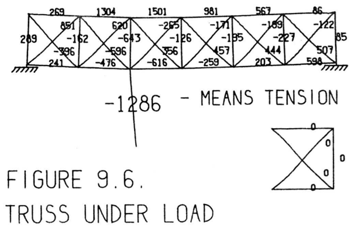
Using the bridge bay six times we construct the complete bridge. The loading line and the one missing end member are put in separately. The six-bay
unloaded truss bridge is part of the library. It took less than ten minutes to
draw completely. Applying a load where desired and attaching supports, one
can observe the forces in the various members. It takes about 30 seconds for
new force values to be computed. The bridge shown in Figure 9.6 has both
outside lower corners fixed in position. Normally, of course, a bridge would
be fixed only at one end and free to move sideways at the other end.
ブリッジ・ベイ（橋梁の構成単位）を6つ使用して、完全な橋を構築します。荷重線と、不足している一方の端部材は、それぞれ別途配置します。この6ベイの無荷重トラス橋は、ライブラリに含まれているものであり、その完全な描画にかかった時間は10分未満です。任意の場所に荷重を加え、支持点を設定することで、各部材に生じる力を確認できます。新しい力の値が計算されるまでにかかる時間は約30秒です。図9.6に示す橋は、外側の両下隅が固定されています。もちろん通常であれば、橋は一方の端のみが固定され、もう一方の端は横方向に移動できるようになっているのが一般的です。
Having drawn a basic bridge shape, one can experiment with various loading conditions and supports to see what the effect of making minor modifications is. For example, an arch bridge is shown in Figure 9.7 supported both
as a three hinged arch (two supports) and as a cantilever (four supports). For
nearly identical loading conditions the distribution of forces is markedly different in these two cases.
橋の基本的な形状を描いた後、荷重条件や支持条件を様々に変えて、細かな変更がどのような影響を及ぼすかを検討することができます。例えば、図9.7には、3ヒンジアーチ（2つの支持点）および片持ち梁（4つの支持点）として支持されたアーチ橋が示されています。ほぼ同じ荷重条件であっても、これら2つのケースでは力の分布が著しく異なります。
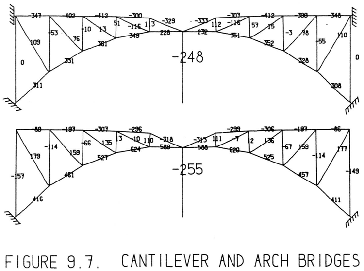
Sketchpad need not be applied only to engineering drawings. The ability to
put motion into the drawings suggests that it would be exciting to try making
cartoons. The capability of Sketchpad to store previously drawn information
on magnetic tape means that every cartoon component ever drawn is available for future use. If the almost identical but slightly different frames that
are required for making a motion picture cartoon could be produced semiautomatically, the entire Sketchpad system could justify itself economically in
yet another way
Sketchpadの用途は、必ずしも工学的な図面に限定されるものではありません。図面に動きを与えることができるという点は、アニメーション制作を試みれば面白いものになるだろうという可能性を示唆しています。また、一度描いた情報を磁気テープに保存できるというSketchpadの機能は、過去に描かれたアニメーションの構成要素をすべて将来的に再利用できることを意味します。もし、アニメーション映画の制作に必要とされる「ほぼ同じだが微妙に異なる」一連のコマを半自動的に生成できるようになれば、Sketchpadシステム全体は、また別の側面からも経済的な正当性を裏付けることができるでしょう。
One way of cartooning is by substitution. For example, the girl “Nefertite” shown in Figure 9.8 can be made to wink by changing which of the
three types of eyes is placed in position on her otherwise eyeless face. Doing
this on the computer display has amused many visitors. A second method of
cartooning is by motion. A stick figure could be made to pedal a bicycle by appropriate application of constraints. Similarly, Nefertite’s hair could be made
to swing. This is the more usual form of cartooning seen in movies.
漫画的な表現を行う一つの方法として、「置き換え（サブスティチューション）」が挙げられます。例えば、図9.8に示す「ネフェルティテ」という少女の顔は、本来目がない状態ですが、そこに3種類の目のいずれかを配置することで、彼女にウィンクをさせることができます。コンピュータの画面上でこれを行うと、多くの来場者が楽しんでくれます。漫画的表現の二つ目の方法は、「動き（モーション）」を利用するものです。適切な拘束条件を適用すれば、棒人間（スティック・フィギュア）に自転車を漕がせることができます。同様に、ネフェルティテの髪を揺らすことも可能です。これこそが、映画などでよく見られる、より一般的な漫画的表現の形態です。
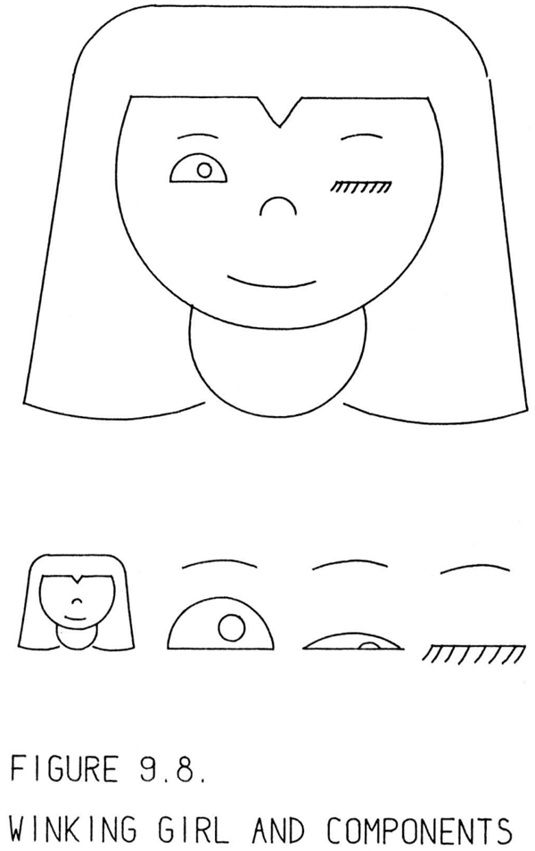
Aside from its economics as a teaching or amusement device, cartooning
can bring the insights which are the prime value of Sketchpad drawings. The
girl seen in Figure 9.9 was traced from a photograph into the Sketchpad system. The photograph was read into the computer by a facsimile machine used
in another project [8] and shown in outline on the computer display. This outline was then traced with wax pencil on the display face. Later, with Sketchpad
in the computer, the outline was made into a Sketchpad drawing by tracing the
wax line with the light pen
教育や娯楽のためのツールとしての経済的な側面はさておき、漫画を描くという行為は、「Sketchpad」による図面が持つ最大の価値である「洞察」をもたらすことができます。図9.9に見られる少女の絵は、写真をなぞってSketchpadシステムに取り込んだものです。その写真は、別のプロジェクト[8]で使用されたファクシミリ装置を使ってコンピュータに読み込まれ、コンピュータのディスプレイ上にはその輪郭が表示されました。そして、ディスプレイの画面上で、その輪郭をワックスペンシルでなぞりました。その後、コンピュータ上でSketchpadを動作させ、ライトペンを使ってそのワックスの線をなぞることで、輪郭をSketchpadの図面へと変換しました。
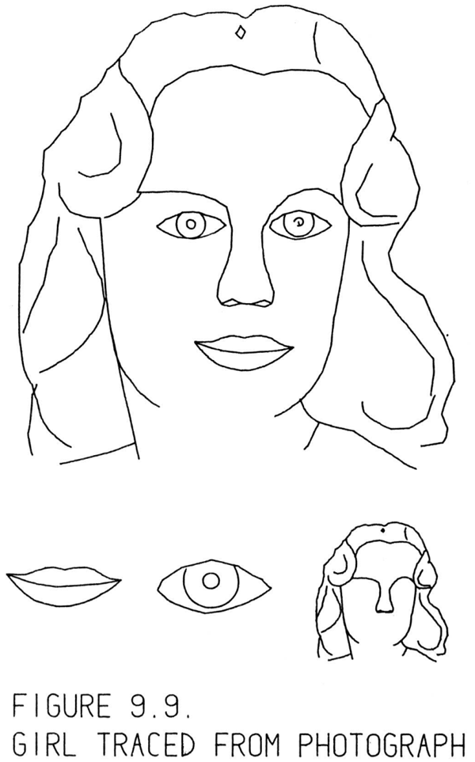
Once having the tracing on magnetic tape many things can be done with
it. In particular, the eyes and mouth were erased to leave the featureless face
which may also be seen in Figure 9.9. Returning to the tracing and erasing
everything except the mouth and then everything except an eye we obtained
features. In refitting the features to the blank face we discovered that, although the original girl was a sweet looking miss, an entirely different character appears if her mouth is made larger as in Figure 9.10. Using a computer to partially automate an artistic process has brought me, a non-artist, some under standing ofk the effect of certain features on the appearance of a face. It is
the understanding that can be gained from computer drawings that is more
valuable than mere production of a drawing for shop use.
磁気テープにトレース（輪郭線データ）を記録してしまえば、それを使って様々な処理が可能になります。具体的には、目と口を消去して、図9.9に見られるような特徴のない顔を作り出しました。さらに、元のトレースデータに戻り、口以外の部分を消去した場合、そして目以外の部分を消去した場合とで、それぞれの顔のパーツ（特徴）を抽出しました。それらのパーツを何もない顔の輪郭に当てはめ直してみると、元の少女は愛らしい顔立ちをしていましたが、図9.10のように口を大きく描くと、全く別人のような印象を与えることがわかりました。コンピュータを使って芸術的な制作プロセスを部分的に自動化したことで、芸術家ではない私でも、顔の特定のパーツがその人の印象にどのような影響を与えるかについて、ある程度の理解を得ることができました。単に実務用の図面を作成すること以上に、コンピュータによる描画を通じて得られるこうした理解こそが、より価値のあるものなのです。
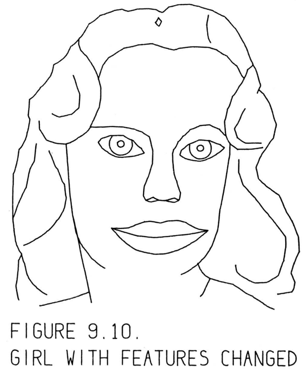
Electrical engineers are, of course, interested in making circuit diagrams. It
is not surprising that Sketchpad should be applied to this task. Unfortunately,
electrical circuits require a great many symbols which have not yet been drawn
properly with Sketchpad and are not therefore in the library. After some time is
spent working on the basic electrical symbols it may be easier to draw circuits.
So far, however, circuit drawing has been a big flop.
電気エンジニアにとって、回路図の作成は当然ながら関心事であり、Sketchpadをこの作業に活用しようとするのは自然な流れと言えます。しかし残念なことに、電気回路には多数のシンボルが必要となりますが、それらはまだSketchpad上で適切に描画されておらず、したがってライブラリにも登録されていません。基本的な電気シンボルの作成に時間を費やせば、回路図を描くのも容易になるかもしれません。しかし今のところ、回路図の作成はうまくいっていません。
The circuits of Figure 9.11 are parts of an analog switching scheme. You
can see in the figure that the more complicated circuits are made up of simpler
symbols and circuits. It is very difficult, however, to plan far enough ahead to
know what composits of circuit symbols will be useful as subpictures of the
final circuit. The simple circuits shown in Figure 9.11 were compounded into
a big circuit involving about 40 transistors. Including much trial and error, the
time taken by a new user (for the big circuit not shown) was ten hours. At
the end of that time the circuit was still not complete in every detail and he
decided it would be better to draw it by hand after all.
図9.11に示す回路は、アナログ・スイッチング・システムの構成要素です。図からわかるように、複雑な回路は、より単純なシンボルや回路を組み合わせて構成されています。しかし、最終的な回路のサブ図（構成部品）としてどのようなシンボルの組み合わせが有用になるかを、あらかじめ見通して計画を立てることは非常に困難です。図9.11の単純な回路は、最終的に約40個のトランジスタを含む大規模な回路へと組み上げられました。多くの試行錯誤を含め、新しいユーザーが（図には示されていない）その大規模な回路を作成するのに要した時間は10時間でした。それだけの時間を費やしても回路の細部までは完成に至らず、結局のところ手描きで作成する方がよいと判断するに至りました。
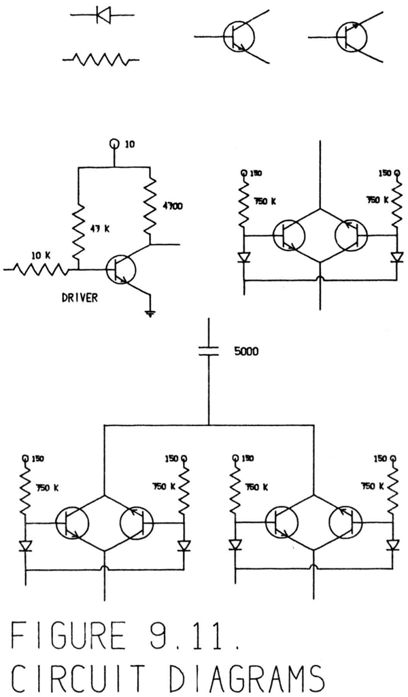
The circuit experience points out the most important fact about computer drawings. It is only worthwhile to make drawings on thek computer if you get
something more out of the drawing than just a drawing. In the repetitive patterns we saw in the first examples, precision and ease of constructing great
numbers of parts were valuable. In the linkage examples, we were able to gain
an understanding of the behavior of a linkage as well as its appearance. In
the bridge examples we got design answers which were worth far more than
the computer time put into them. If we had had a circuit simulation program
connected to Sketchpad so that we would have known whether the circuit
we drew worked, it would have been worth our while to use the computer to
draw it. We are as yet a long way from being able to produce routine drawings
with the computer.
回路に関する事例は、コンピュータによる図面作成について最も重要な事実を浮き彫りにしています。コンピュータで図面を作成することに価値があるのは、単なる図面以上のものをそこから得られる場合だけです。最初の例で見られたような反復的なパターンの場合、精度の高さや、多数の部品を容易に作成できるという点が有益でした。リンク機構の例では、その外観だけでなく、機構の動作についても理解を深めることができました。橋の設計例では、費やしたコンピュータの処理時間以上に価値のある設計上の知見が得られました。もし「Sketchpad」に回路シミュレーション・プログラムが組み合わされていて、描いた回路が実際に機能するかどうかを確認できていたなら、コンピュータを使ってその回路を描くことには十分な価値があったでしょう。コンピュータを使って日常的に図面を作成できるようになるまでには、まだ長い道のりがあります。
The methods outlined in this report generalize nicely to three dimensional
drawing. In fact, work has already been begun to make a complete “Sketchpad
Three” which will let the user communicate solid objects to the computer. A forthcoming thesis by Timothy Johnson of the Mechanical Engineering Department will describe this work. When Johnson is finished it should be possible
to aim at a particular place in the three dimensional drawing through two dimensional, perspective views presented on the display. Johnson is completely
bypassing the problem of converting several two dimensional drawings into
a three dimensional shape. Drawing will be directly in three dimensions from
the start. No two dimensional representation will ever be stored.
本報告書で概説した手法は、3次元描画にも容易に拡張可能です。実際、ユーザーが立体形状をコンピュータに伝達できるようにする本格的な「Sketchpad Three」の開発がすでに始まっており、この取り組みについては、機械工学科のティモシー・ジョンソン氏による論文で詳述される予定です。同氏の研究が完了すれば、ディスプレイ上に表示される2次元の透視図（パース図）を介して、3次元描画内の特定の場所を指し示すことが可能になるはずです。ジョンソン氏の手法では、複数の2次元図面から3次元形状を構築・変換するという問題そのものを回避しています。つまり、最初から直接3次元空間で描画を行うのであり、2次元的な表現がデータとして保存されることは一切ありません。
Work is also proceeding on direct conversion of photographs into line drawings. Roberts reports a computer program [8] able to recognizek simple objects
in photographs well enough to produce three dimensional line drawings for
them. Roberts is storing his drawings in the ring structure described in Chapter III so that his results will be compatible with the three dimensional version
of Sketchpad.
写真を直接線画に変換する作業も進められている。ロバーツは、写真内の単純な物体を認識し、それらの三次元線画を生成できるコンピュータ・プログラム [8] について報告している。彼は、自身の生成した図形をSketchpadの三次元版と互換性のあるものにするため、それらを第3章で述べたリング構造に格納している。
Much room is left in Sketchpad itself for improvements. Some improvements are minor, such as including mirror image subpictures. Some improvements should be made to suit Sketchpad to particular uses that come up. For
example, it is so interesting to study the path of particular points on a linkage
that Sketchpad should be able to store and later display the path of chosen
points.
Sketchpad自体には、改良の余地がまだ大いに残されています。鏡像となる部分図形を追加するといった些細な改良もあれば、生じてくる特定の用途に合わせて行うべき改良もあります。例えば、リンク機構上の特定の点が描く軌跡を調べることは非常に興味深いものですから、Sketchpadには、選択した点の軌跡を記録し、後で表示できる機能が備わっているべきでしょう。
More major improvements of the same order and power as the existing definition copying capability can be forseen. At present Sketchpad is able to add
defined relationships to an existing object drawing. A method should be devised for defining and applying changes which involve removing some parts
of the object drawing as well as adding new ones. Such a capability would permit one to define what rounding off a corner means. Then, by pointing at any
corner and applying that definition, one could round off any corner. Sketchpad cannot now do this because rounding off a corner involves disconnecting
the two lines which form the corner from the corner point and then putting a
small circular arc between them.
既存の「定義のコピー」機能と同等の規模と能力を持つ、さらなる主要な改良が期待されます。現時点のSketchpadでは、既存の図形に対して定義された関係性を追加することは可能です。しかし、図形の一部を削除しつつ新たな要素を追加するような変更を定義し、適用する手法も考案されるべきでしょう。そのような機能があれば、「角を丸める」という操作を定義できるようになります。そうすれば、任意の角を指し示してその定義を適用するだけで、どんな角でも丸めることが可能になるはずです。現在のSketchpadではこの操作ができません。なぜなら、角を丸めるには、その角を形成する2本の線を角の頂点から切り離し、その間に小さな円弧を挿入する必要があるからです。
Sketchpad has pointed out some weaknesses in present computer hardware. A
proposal for a line drawing display which would greatly surpass the capability
of the spot display now in use is given ink Appendix E. Such a display would
not only provide flicker free display to the user, but also would relieve the
computer of the burden it now carries in computing successive spots in the
display.
Sketchpadは、現在のコンピュータ・ハードウェアにおけるいくつかの弱点を浮き彫りにしました。現在使用されているスポット表示方式の能力を大幅に凌駕する線画表示方式の提案が、付録Eに示されています。このような表示方式を採用すれば、ユーザーに対してちらつきのない画面を提供できるだけでなく、表示上の各点を順次計算するためにコンピュータが現在負っている負荷を軽減することも可能になります。
There are two conflicting demands made by Sketchpad on the light pen.
On the one hand, the pen must have a fairly large field of view for ease of
tracking. On the other hand, it should have a small field of view for aiming at
objects. It should be possible to build a pen with two concentric fields of view
which would report to the computer separately.
Sketchpadにおいて、ライトペンには相反する2つの要求が課されています。
一方では、追跡を容易にするために、ペンは比較的広い視野を持つ必要があります。他方では、オブジェクトを狙い定めるために、狭い視野を持つことが求められます。同心円状の2つの視野を持ち、それぞれが個別にコンピュータへ情報を送るようなペンを製作することは可能でしょう。
The arithmetic element of the computer is not used in doing the ring structure processing which forms a large part of Sketchpad. On the other hand,
the index registers and their associated arithmetic are extensively used. This suggests that several users could share an arithmetic element if sufficiently
powerful index arithmetic were made available to each of them.
Sketchpadの機能の大部分を占めるリング構造の処理において、コンピュータの演算ユニットは使用されません。その一方で、インデックスレジスタやそれに関連する演算機能は広範に利用されています。このことは、各ユーザーに対して十分に強力なインデックス演算機能が提供されれば、複数のユーザーで演算ユニットを共有できる可能性を示唆しています。